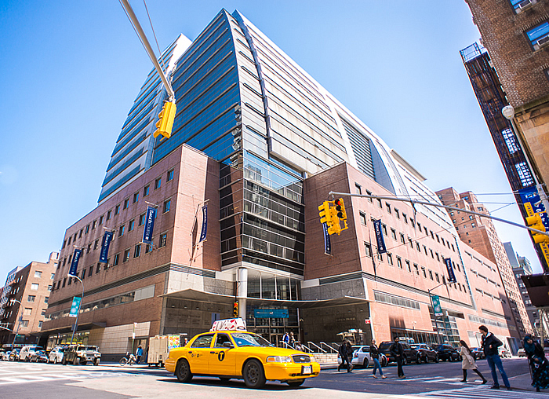

Baruch College
The Bernard M. Baruch College of the City University of New York, commonly known as Baruch College, is a constituent college of the City University of New York system located in the Gramercy Park section of Manhattan, New York City
- Graphic communications
- The graphic communication specialization provides training in graphics as well as exposure to the broader aspects of business communication. It prepares the graphic artist to enter a business environment.
Borough of Manhattan Community College
The Borough of Manhattan Community College is one of seven two-year colleges within the City University of New York system
- Animation and Motion Graphics
- The Animation and Motion Graphics program provides students with the fundamentals of two- and three-dimensional (2D and 3D) animation, motion graphics, and special effects.
- Multimedia Programming
- The program instructs students in the design and programming of computer-based interactive products that incorporate text, graphics, sound,animation and video.
- Multimedia Arts & Design
- The program instructs students in the design and programming of computer-based interactive products that incorporate text, graphics, sound,animation and video.

City College
TThe City College of the City University of New York is a public senior college of the City University of New York in New York City.
- Electronic Design And Multimedia
- City College has a highly diverse student population of students coming from every community within New York City and from all over the world. EDM students are trained for careers in design in all aspects of print and screen media and design.